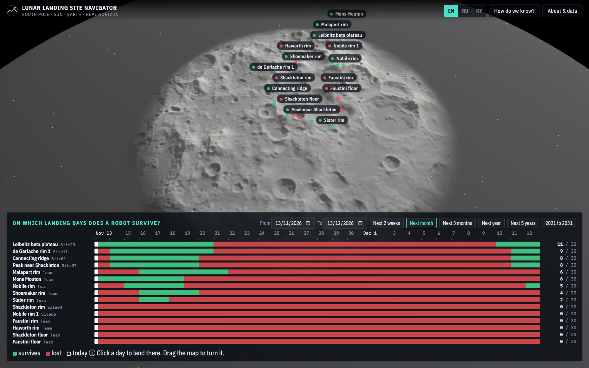
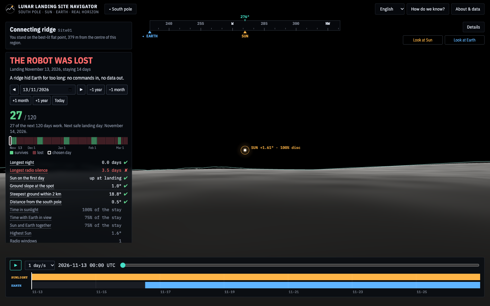

Will a solar robot survive a landing here, on this day?
Lunar Landing Site Navigator. Team 404 agents, Naryn. NASA Space Apps Challenge 2026.
Open the appA ready 45 minute school lesson with the app, in English, Russian and Kyrgyz. The project in seven slides.
The problem
At the Moon's south pole the Sun never climbs more than a couple of degrees above the horizon. It slides sideways along it. So one hill, kilometres away, can hide the Sun for days, and one ridge can hide Earth and cut the radio. A few hundred metres, or a few days of launch delay, can decide whether a mission lives.
What you do


- Read the verdict. MISSION SURVIVED or MISSION LOST, with one sentence of why.
- Read the strip. One cell for each of the next 120 landing days. Green survives, red is lost. Click a day to land on it.
- Change the day. A day, a month or a year back or forward, any day from 2021 to 2031.
- Press play. Watch the 14 days in 3D: the Sun circling the horizon, Earth dipping behind a ridge.
The checks
| Check | Limit | Why |
|---|---|---|
| Longest night | at most 2 days | the battery carries the robot through two days of darkness |
| Longest radio silence | at most 3 days | with Earth hidden, no commands go up and no data comes down |
| Sun on the first day | within 24 hours | a robot that lands in the dark starts with a battery that only drains |
| Ground slope at the spot | under 10° | a lander can tip over on steep ground (NASA Artemis III requirement) |
| Steepest ground within 2 km | under 20° | astronauts and rovers must cross it (NASA Artemis III requirement) |
| Distance from the pole | within 6° | where the water ice is (NASA Artemis III requirement) |
The first four decide the verdict. Five more lines are shown for information: time in sunlight, time with Earth in view, both together, the highest Sun, and the number of radio windows. The 2 day, 3 day and 24 hour limits are teaching values chosen by our team, not NASA requirements.
Where the numbers come from
- Terrain: NASA Lunar Reconnaissance Orbiter laser altimeter (LOLA),
LDEM_80S_80M, 80 m per pixel. The skyline around each site is traced on it. - Sites: six regions from NASA's Lunar Surface Data Book (M2M-30044). For five of them we also found the best-lit flat point within 500 m, and that is where you stand. Nine more sites were picked by our team on the same terrain: the best-lit point of a crater rim, or the lowest point of a crater floor.
- Sun and Earth: positions are calculated for every hour from 2021 to 2031 with astronomy-engine and the IAU lunar rotation model. A past day is history, a future day is a prediction; the terrain does not change.
How we know it is right
- Our Sun and Earth positions agree with NASA JPL Horizons to 0.005°.
- They also agree, to better than 0.01°, with a separate calculation made with NASA's DE440 ephemeris by a different program, at four sites over two years. A test fails if they stop agreeing.
- Four real landings. Pick "Replay a real landing" in the app. At Chandrayaan-3's site our sunset falls on 4 September 2023, the day India put the lander to sleep ahead of the night. At Chang'e 6's site, on the far side, Earth never rises: the real mission needed a relay satellite. IM-1 is lost to the night it was not built for. For IM-2 the model passes the site and the day; the real lander fell on its side, which no site tool can foresee.
- NASA's own light maps. We looked up our twenty points in NASA Goddard's polar illumination maps (Mazarico et al. 2011). Time with Earth in view agrees within 3 points on average. For the Sun both agree on which points are bright and dark, but on sharp ridges ours is higher by 11 points on average, so read our ridge-top Sun numbers as an upper estimate. The full table is in the app under "How do we know?".
- Each rule is tested exactly at its limit and just past it.
- A browser test plays the whole app and checks that a green or red day, on the map timeline and on the site, equals the verdict you get when you click it.
What it does not do
- Fifteen prepared sites on 80 m terrain. A point you add near the pole uses coarser 320 m terrain; anywhere else the Moon is treated as smooth.
- Nothing smaller than 80 m is in the data: no rocks, no small craters.
- It does not plan a descent, a trajectory or fuel. It answers power and radio.